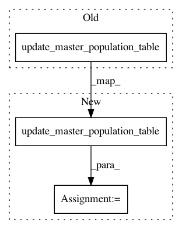

c51e2ebca66736652dd23c5f80deb9a133fa938a,spynnaker/pyNN/models/neuron/synaptic_manager.py,SynapticManager,__write_row_data,#SynapticManager#Any#Any#Any#Any#Any#Any#Any#Any#Any#Any#Any#Any#Any#,867
Before Change
spec, synaptic_matrix_region, block_addr)
spec.switch_write_focus(synaptic_matrix_region)
spec.write_array(row_data)
self.__poptable_type.update_master_population_table(
spec, block_addr, row_length,
rinfo.first_key_and_mask, master_pop_table_region)
block_addr += len(row_data) * 4
return block_addr, single_addr
def _get_ring_buffer_shifts(
After Change
spec, synaptic_matrix_region, block_addr)
spec.switch_write_focus(synaptic_matrix_region)
spec.write_array(row_data)
index = self.__poptable_type.update_master_population_table(
spec, block_addr, row_length,
rinfo.first_key_and_mask, master_pop_table_region)
block_addr += len(row_data) * 4
return block_addr, single_addr, index
def _get_ring_buffer_shifts(
In pattern: SUPERPATTERN
Frequency: 3
Non-data size: 3
Instances
Project Name: SpiNNakerManchester/sPyNNaker
Commit Name: c51e2ebca66736652dd23c5f80deb9a133fa938a
Time: 2019-07-09
Author: Andrew.Rowley@manchester.ac.uk
File Name: spynnaker/pyNN/models/neuron/synaptic_manager.py
Class Name: SynapticManager
Method Name: __write_row_data
Project Name: SpiNNakerManchester/sPyNNaker
Commit Name: c51e2ebca66736652dd23c5f80deb9a133fa938a
Time: 2019-07-09
Author: Andrew.Rowley@manchester.ac.uk
File Name: spynnaker/pyNN/models/neuron/synaptic_manager.py
Class Name: SynapticManager
Method Name: __generate_on_chip_data
Project Name: SpiNNakerManchester/sPyNNaker
Commit Name: c51e2ebca66736652dd23c5f80deb9a133fa938a
Time: 2019-07-09
Author: Andrew.Rowley@manchester.ac.uk
File Name: spynnaker/pyNN/models/neuron/synaptic_manager.py
Class Name: SynapticManager
Method Name: __write_block